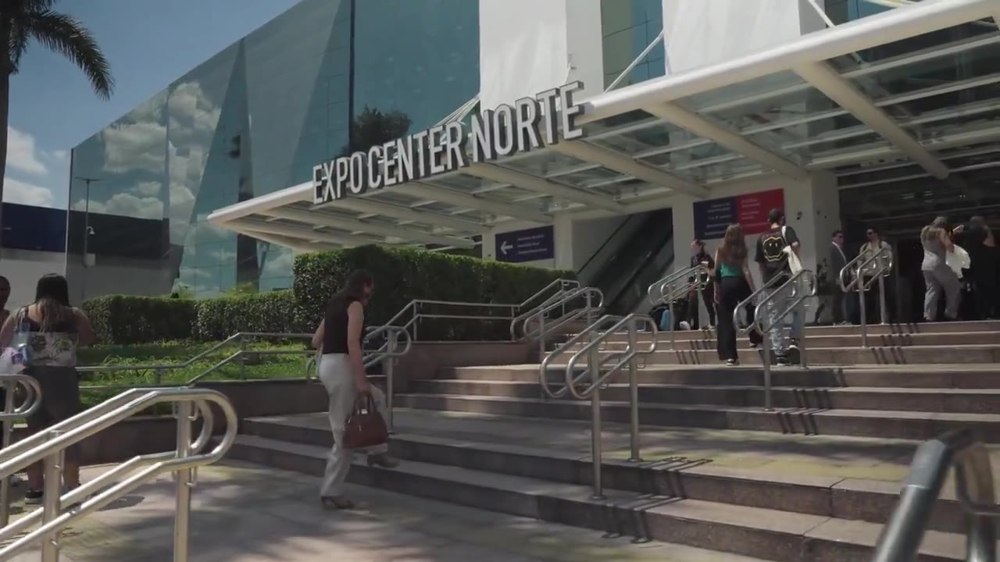

Ксения Петель
Сценарист, контент-идеи
Находит темы и ракурсы, собирает структуру ролика и пишет сценарий с учётом площадки.
Создаём видео для экспертов и брендов: подкасты, короткие ролики и продуктовые истории. Берём на себя сценарии, съёмку, монтаж, дизайн и ведение площадок.

Разные задачи.
Одна команда.
Видео, контент и ведение площадок.
Наша роль — в каждом кейсе.
Открывайте кейсы: что делали, за что отвечали и какие работы получились.
Показано: 12
Сценарии и монтаж — часть процесса. Когда задача шире, берём на себя организацию производства, упаковку и выход контента.
Собрали процесс YouTube-продакшена, в котором тема проходит все стадии: сценарий, съёмка, монтаж, упаковка и выпуск. Объединили работу над длинными форматами и Shorts.
Обезличенный кейс организации YouTube-продакшена.
Самостоятельные работы без большого кейса. Нажмите на ролик, чтобы посмотреть его здесь, во встроенном плеере.
Показано: 8
Собираем состав под проект.
У каждого этапа — ответственный специалист.
Находит темы и ракурсы, собирает структуру ролика и пишет сценарий с учётом площадки.
Работает с драматургией монтажа, графикой и визуальным оформлением контента.
Обложки, Stories, карточки и материалы для соцсетей в единой стилистике проекта.
Кадр, свет и запись материала под согласованный сценарий и формат выпуска.
Публикационный календарь, оформление постов и работа с обратной связью аудитории.
Под серию выпусков подключаем пул монтажёров. Состав команды выбираем по формату, объёму и срокам; задачи и требования к готовому материалу фиксируем до старта.
Один ролик, серия выпусков или ведение площадки — выберем формат под вашу задачу.
Когда исходники уже есть
Когда нужна идея и готовое видео
Когда нужен регулярный выпуск
Состав работ, количество роликов, сроки и стоимость согласуем после знакомства с задачей.
Расскажите о продукте, площадке и ближайшей задаче.
Подкасты, соло-выпуски и короткие вырезки — в одном редакционном и производственном процессе.
Выпускать контент для предпринимателей и развивать YouTube-канал о бизнесе и применении AI.
Период работы
Монтаж: апрель 2023 — июнь 2025. Руководство: июнь 2025 — май 2026.
За июнь 2025 — май 2026 аудитория канала выросла с 7 000 до 32 000 подписчиков. В основе проекта — подкасты; соло-выпуски раскрывали экспертизу автора, а короткие вырезки давали зрителю отдельную точку входа в контент.
Исторический результат проекта за указанный период, не текущий счётчик и не прогноз для других каналов.Вели соцсети пивоварни TERNES: придумывали публикации, оформляли ленту и монтировали ролики. Показывали сорта, рассказывали о производстве и знакомили аудиторию с людьми за продуктом.
Предметные сцены знакомят с сортами, северные образы поддерживают характер бренда, а акции и коллаборации дают отдельный повод для публикации.
Вести площадку пивоварни так, чтобы ассортимент становился понятнее, а между продуктовыми публикациями оставалось место живому общению с аудиторией.
Период работы
12 октября 2025 — 30 августа 2026.
Собрали содержательную ленту вокруг продукта: предметные визуалы, объясняющие ролики, экспертные интервью и диалоговые посты. В подборке видно, как один бренд раскрывается через разные форматы, сохраняя узнаваемость.
Пост о Хефевайцене начинается с вопроса о банановой ноте, объясняет её происхождение и заканчивается приглашением обсудить пшеничные сорта.
Вопрос цепляет любопытство, объяснение помогает разобраться в продукте, а финал открывает разговор с аудиторией.
Посмотреть оригинал ↗Контент-сопровождение бьюти-блога Алёны: от идеи обзора и сценария до монтажа и ведения соцсетей. В центре — реальный продукт, авторская подача и наглядная демонстрация.
Креативный макияж и работа с цветом. Фото дополняют видео: дают рассмотреть детали образа и результат использования продукта.
Организовать выпуск контента для бьюти-блога в Instagram, TikTok и Telegram: от выбора тем до готовых роликов и публикаций.
Для блога подготовили обзоры, полезные советы, свотчи и креативные образы. Бьюти-лайфхак «Можно ли точить карандаш в пластике?» набрал 14 297 просмотров на YouTube; обзор Beauty Bomb × Смешарики — 5 837. По двум срезам аудитория канала выросла со 198 до 220 подписчиков.
YouTube: 198 подписчиков на 18.06.2026 и 220 на 05.09.2026 (+11,1%). Просмотры — публичный срез 05.09.2026. Это показатели блога, а не доказательство влияния отдельного инструмента или обещание результата.Вели соцсети игрового магазина и создавали Stories об ассортименте. Консоли, геймпады и гаджеты стали героями поздравлений и шуточного шоу о поиске пары.
Сначала — приглашение в историю, затем — поздравления от консолей и гаджетов. У каждого товара своя реплика: особенности устройства превращаются в комплимент.
Знакомый формат шоу стал способом показать подарочные сочетания. «Жених» и «невеста» получают характеры, а геймпады, консоли и техника — необычное соседство в одной истории.
Поддерживать соцсети магазина и находить поводы рассказать о товарах за пределами цены и характеристик. Для Stories — придумать сюжет, который связывает несколько карточек и даёт повод листать дальше.
Период работы
SMM-сопровождение — 3 месяца.
Подготовили серии Stories, в которых товар встроен в сюжет: зритель знакомится с ассортиментом через игровую шутку, поздравление или поиск пары. Подборка показывает креатив и дизайн в рамках трёхмесячного ведения соцсетей.
Stories ко Дню влюблённых; год не указан. Игровые персонажи и изображения товаров использованы в дизайне — их создание не приписывается нашей команде.Визуальные материалы для компьютерного клуба: от тарифной сетки и промокарточек до буклета и оформления игровых зон.
Конфигурации компьютеров, игровые тарифы и специальные предложения. Тёмный фон, крупная типографика и оранжевые акценты связывают разные рекламные форматы.
В буклете и листовке собраны предложения клуба, конфигурации, тарифы и контакты. Здесь можно рассмотреть развороты целиком.
Фотографии применения: оформление дверей VIP- и DUO-зон. Они показывают работу на реальном носителе.
Оформить информацию о клубе и его предложениях для разных носителей, сохранив общую чёрно-оранжевую стилистику.
Клуб получил комплект дизайна для работы с посетителями онлайн и на месте. На фотографиях видно применение оформления VIP- и DUO-зон.
Разовая работа по дизайну. Ведение соцсетей и разработку бренда с нуля в этот кейс не включаем.Конференция, цифровой персонаж, реклама и продуктовые инструкции — работы для одного заказчика.
Подготовить видеоконтент для разных задач бренда: представить компанию, показать событие и объяснить продукт.
В портфолио — шесть работ для одного бренда: имиджевые, рекламные, событийные и обучающие форматы.
Команда отвечала за весь выпуск контента: темы и сценарии, съёмку, монтаж и публикацию.
Организовать производство обучающих видео и их выход на площадке проекта.
Проект получал готовый к выходу контент с ответственностью команды за все стадии производства и публикацию.
Выстраивали содержание роликов и полностью закрывали монтаж. Публикацией занимался сам Алексей.
Готовить контент для авторского проекта на протяжении двух месяцев сотрудничества в период чемпионата мира 2026.
Период работы
В период чемпионата мира 2026, по данным заказчика портфолио.
Два месяца совместной работы над контентом: идеи, сценарии и готовый монтаж на стороне команды; публикация — на стороне автора.
Levi’s и Nike — темы роликов, а не заказчики агентства.Короткие истории с героиней Азу и анимация для продукта о беременности.
Представить продукт через короткие видео и узнаваемого персонажа.
Подготовили короткие сюжетные видео для продукта: историю с героиней Азу и анимационную короткометражку.
Авторские персонажи и короткие анимационные истории, созданные с помощью AI.
Создавать сюжетный AI-контент с персонажами и последовательным развитием истории.
Две работы показывают опыт команды в создании сюжетного AI-контента.
Монтировали видео для проекта «Хедлайнер»: AI-интро и ролик о BlockChain 2024.
Подготовить монтаж видеоматериалов проекта.
Готовые ролики представлены в подборке.
Собрали процесс YouTube-продакшена, в котором тема проходит все стадии: сценарий, съёмка, монтаж, упаковка и выпуск. Объединили работу над длинными форматами и Shorts.
Организовать выпуск подкастов, соло и коротких видео: связать работу автора, студии, монтажёров и дизайнеров и доводить материалы до публикации.
Производство было доведено до опубликованных выпусков: сценарии, монтаж, упаковка и согласования работали в одном процессе. Для подкастов и соло подготовлены выпускные пакеты, для коротких форматов — сценарии и публикации. Это кейс организации продакшена, а не только работы в монтажной программе.
Обезличенный опыт команды. Заказчик, внутренние показатели и материалы не раскрываются.Тема, структура и сценарий с понятной задачей выпуска.
Задания студии и команде, согласования и приёмка монтажа.
Название, обложка, описание и главы по готовому материалу.
Подготовка к публикации и разбор показателей контента.